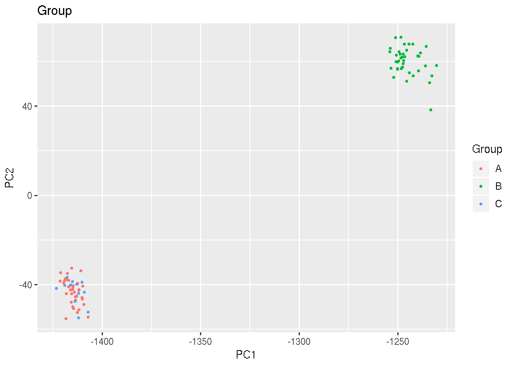

Last updated: 2018-11-26
workflowr checks: (Click a bullet for more information) ✔ R Markdown file: up-to-date
Great! Since the R Markdown file has been committed to the Git repository, you know the exact version of the code that produced these results.
✔ Environment: empty
Great job! The global environment was empty. Objects defined in the global environment can affect the analysis in your R Markdown file in unknown ways. For reproduciblity it’s best to always run the code in an empty environment.
✔ Seed:
set.seed(20181008)
The command set.seed(20181008) was run prior to running the code in the R Markdown file. Setting a seed ensures that any results that rely on randomness, e.g. subsampling or permutations, are reproducible.
✔ Session information: recorded
Great job! Recording the operating system, R version, and package versions is critical for reproducibility.
✔ Repository version: c3cdf7e
wflow_publish or wflow_git_commit). workflowr only checks the R Markdown file, but you know if there are other scripts or data files that it depends on. Below is the status of the Git repository when the results were generated:
Ignored files:
Ignored: data/.Rhistory
Untracked files:
Untracked: code/processGEOFiles.R
Untracked: data/GPL570.soft
Untracked: data/GPL571.soft
Untracked: data/GSE18323-GPL570_series_matrix.txt.gz
Untracked: data/GSE18323-GPL571_series_matrix.txt.gz
Untracked: data/gpl_eset.Rds
Untracked: data/h.all.v5.0.symbols.gmt
| File | Version | Author | Date | Message |
|---|---|---|---|---|
| html | f9dfd7e | carlmurie | 2018-11-26 | Build site. |
| Rmd | 2cfa7e7 | carlmurie | 2018-11-26 | publish project |
PCA was conducted on the combination of three groups:
| total | T0 | T5 | |
|---|---|---|---|
| Delay | 22 | 11 | 11 |
| InfectivityControl | 12 | 0 | 0 |
| NonProtected | 29 | 14 | 15 |
| Protected | 24 | 11 | 13 |

| Version | Author | Date |
|---|---|---|
| f9dfd7e | carlmurie | 2018-11-26 |
R version 3.5.0 (2018-04-23)
Platform: x86_64-pc-linux-gnu (64-bit)
Running under: Ubuntu 14.04.5 LTS
Matrix products: default
BLAS/LAPACK: /app/easybuild/software/OpenBLAS/0.2.18-GCC-5.4.0-2.26-LAPACK-3.6.1/lib/libopenblas_prescottp-r0.2.18.so
locale:
[1] LC_CTYPE=en_US.UTF-8 LC_NUMERIC=C
[3] LC_TIME=en_US.UTF-8 LC_COLLATE=en_US.UTF-8
[5] LC_MONETARY=en_US.UTF-8 LC_MESSAGES=en_US.UTF-8
[7] LC_PAPER=en_US.UTF-8 LC_NAME=C
[9] LC_ADDRESS=C LC_TELEPHONE=C
[11] LC_MEASUREMENT=en_US.UTF-8 LC_IDENTIFICATION=C
attached base packages:
[1] parallel stats graphics grDevices utils datasets methods
[8] base
other attached packages:
[1] magrittr_1.5 RNASeqUtilities_1.1 here_0.1
[4] data.table_1.11.8 forcats_0.3.0 stringr_1.3.1
[7] dplyr_0.7.99.9000 purrr_0.2.5 readr_1.1.1
[10] tidyr_0.8.0 tibble_1.4.99.9005 ggplot2_3.0.0
[13] tidyverse_1.2.1 Biobase_2.40.0 BiocGenerics_0.26.0
[16] knitr_1.20
loaded via a namespace (and not attached):
[1] tidyselect_0.2.5 haven_1.1.2 lattice_0.20-35
[4] colorspace_1.3-2 viridisLite_0.3.0 htmltools_0.3.6
[7] yaml_2.2.0 rlang_0.3.0.9000 R.oo_1.22.0
[10] pillar_1.3.0.9001 glue_1.3.0 withr_2.1.2
[13] R.utils_2.7.0 modelr_0.1.1 readxl_1.1.0
[16] plyr_1.8.4 munsell_0.5.0 gtable_0.2.0
[19] workflowr_1.1.1 cellranger_1.1.0 rvest_0.3.2
[22] R.methodsS3_1.7.1 htmlwidgets_1.2 kableExtra_0.9.0
[25] evaluate_0.11 labeling_0.3 highr_0.6
[28] broom_0.5.0 Rcpp_1.0.0 DT_0.4
[31] backports_1.1.2 scales_1.0.0 limma_3.36.1
[34] jsonlite_1.5 gridExtra_2.3 hms_0.4.2
[37] digest_0.6.18 stringi_1.2.4 grid_3.5.0
[40] rprojroot_1.3-2 cli_1.0.1 tools_3.5.0
[43] lazyeval_0.2.1 crayon_1.3.4 whisker_0.3-2
[46] pkgconfig_2.0.2 xml2_1.2.0 lubridate_1.7.4
[49] assertthat_0.2.0 rmarkdown_1.10 httr_1.3.1
[52] rstudioapi_0.8 R6_2.3.0 nlme_3.1-137
[55] git2r_0.23.0 compiler_3.5.0 This reproducible R Markdown analysis was created with workflowr 1.1.1